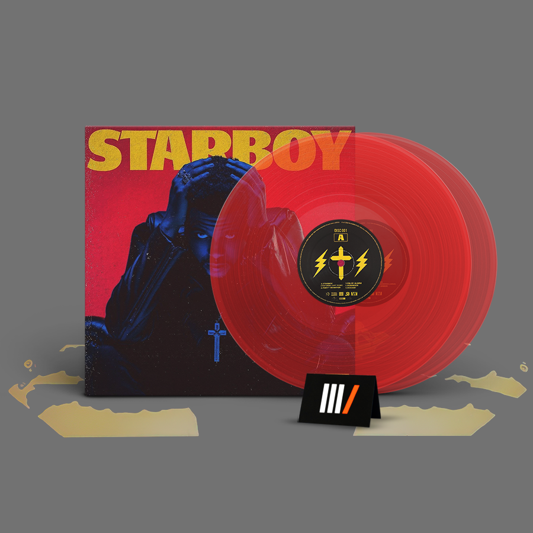

Starboy |
||
Fecha de publicación: 25 de noviembre de 2016 |
 |
Géneros: Pop, R&B contemporáneo, Trap |
Discográfica: Universal Republic Records |
Duración: 68:40 |
|
Al 98% le gustó este álbum |
 | Starboy es el tercer álbum de estudio de The Weeknd |
Cuenta con apariciones especiales de Daft Punk, Lana Del Rey, Kendrick Lamar y Future |
Premios: Premio Grammy al Mejor Álbum de Música Urbana Contemporánea, etc. |
|